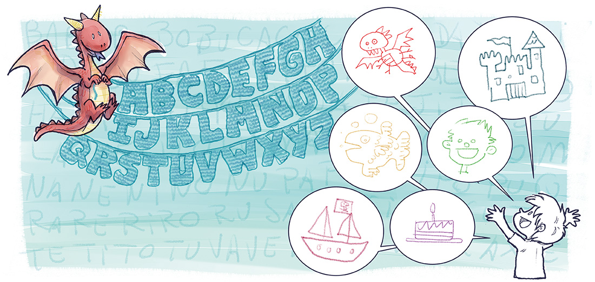

Juntos, encontraram o fio condutor entre os nomes
e as coisas, entre a fantasia e a realidade.

Descrição de imagem: O dragão voa no canto superior esquerdo, em frente às letras do alfabeto tricotadas como bandeirinhas. Thomas está no outro canto, com expressão animada e braços levantados. Da sua direção saem seis balões de fala, cada um com um desenho dentro: um dragão, um castelo, um peixe, um menino, um barco pirata e um bolo de aniversário. Fim da descrição.
Com todas as letras organizadas,
Thomas e o dragão finalmente se entenderam.